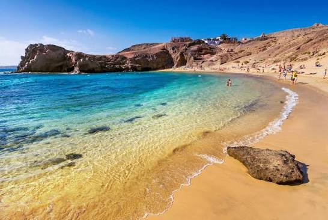

La Playa de Papagayo es una de las playas más bonitas de Lanzarote. Está en el sur de la isla, dentro del parque natural de Los Ajaches.
Me encanta porque el agua es cristalina y hay muy poca gente. Es el sitio perfecto para relajarse y desconectar.

Más información en Spain.info
Ver datos prácticos
Más información en Spain.info
Ver datos prácticos